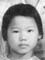

光

仕俊
Xù Dün
Shìjùn
前
艷芳 = 梁戊寅
Yèm Fǒng = Lẽng Mù Yĩn
Yànfān = Liáng Wùyín
梁維暖
Lẽng Vĩ Nön
Liáng Wéinuǎn
梁佩娟
Lẽng Böi Gün
Liáng Pèijuān
梁碧娟
Lẽng Bēik Gün
Liáng Bìijuān
| 148,107,60,25 光 |
仕俊 Xù Dün Shìjùn |
||
|---|---|---|---|
| 149,108,61,26 前 |
艷芳 = 梁戊寅 Yèm Fǒng = Lẽng Mù Yĩn Yànfān = Liáng Wùyín |
||
|
梁維暖 Lẽng Vĩ Nön Liáng Wéinuǎn |
梁佩娟 Lẽng Böi Gün Liáng Pèijuān |
 梁碧娟 Lẽng Bēik Gün Liáng Bìijuān |
|